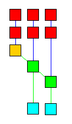

10.
The Rete Algorithm
The information in this Section is provided for the
curious reader. An understanding of the Rete algorithm may be helpful in
planning expert systems; an understanding of Jess's implementation probably
will not. Feel free to skip this section and come back to it some other
time. You should not take advantage of many of the Java classes mentioned
in this section. They are internal implementation details and any Java
code you write which uses them may well break each time a new version of
Jess is released.
Jess is a rule-based expert system shell. In the simplest terms, this
means that Jess's purpose it to continuously apply a set of if-then statements
(rules) to a set of data (the knowledge base). You define the rules
that make up your own particular expert system. Jess rules look something
like this:
(defrule library-rule-1
(book (name ?X) (status late) (borrower ?Y))
(borrower (name ?Y) (address ?Z))
=>
(send-late-notice ?X ?Y ?Z))
Note that this syntax is identical to the syntax used by CLIPS. This rule
might be translated into pseudo-English as follows:
Library rule #1:
If
a late book exists, with name X, borrowed by someone named Y
and
that borrower's address is known to be Z
then
send a late notice to Y at Z about the book X.
The book and borrower entities would be found on the knowledge base. The knowledge
base is therefore a kind of database of bits of factual knowledge about
the world. The attributes (called slots) that things like books
and borrowers are allowed to have are defined in statements called deftemplates.
Actions like send-late-notice can be defined in user-written functions
in the Jess language (deffunctions) or in Java (Userfunctions)
For more information about rule syntax refer to the
the Jess language guide.
The typical expert system has a fixed set of rules while the knowledge base
changes continuously. However, it is an empirical fact that, in most expert
systems, much of the knowledge base is also fairly fixed from one rule operation
to the next. Athough new facts arrive and old ones are removed at all times,
the percentage of facts that change per unit time is generally fairly small.
For this reason, the obvious implementation for the expert system shell
is very inefficient. This obvious implementation would be to keep a list
of the rules and continuously cycle through the list, checking each one's
left-hand-side (LHS) against the knowledge base and executing the right-hand-side
(RHS) of any rules that apply. This is inefficient because most of the
tests made on each cycle will have the same results as on the previous
iteration. However, since the knowledge base is stable, most of the tests will
be repeated. You might call this the rules finding facts approach
and its computational complexity is of the order of O(RF^P), where R is
the number of rules, P is the average number of patterns per rule LHS,
and F is the number of facts on the knowledge base. This escalates
dramatically as the number of patterns per rule increases.
Jess instead uses a very efficient method known as the Rete (Latin for
net) algorithm. The classic paper on the Rete algorithm ("Rete:
A Fast Algorithm for the Many Pattern/ Many Object Pattern Match Problem",
Charles L. Forgy, Artificial Intelligence 19 (1982), 17-37) became
the basis for a whole generation of fast expert system shells: OPS5, its
descendant ART, and CLIPS. In the Rete algorithm, the inefficiency described
above is alleviated (conceptually) by remembering past test results across
iterations of the rule loop. Only new facts are tested against any rule
LHSs. Additionally, as will be described below, new facts are tested against
only the rule LHSs to which they are most likely to be relevant. As a result,
the computational complexity per iteration drops to something more like
O(RFP), or linear in the size of the fact base. Our discussion of the
Rete algorithm is necessarily brief. The interested reader is referred
to the Forgy paper or to Giarratano and Riley, "Expert Systems:
Principles and Programming", Second Edition, PWS Publishing (Boston,
1993) for a more detailed treatment.
The Rete algorithm is implemented by building a network of nodes, each
of which represents one or more tests found on a rule LHS. Facts that are
being added to or removed from the knowledge base are processed by this network
of nodes. At the bottom of the network are nodes representing individual
rules. When a set of facts filters all the way down to the bottom of the
network, it has passed all the tests on the LHS of a particular rule and
this set becomes an activation. The associated rule may have its
RHS executed (fired) if the activation is not invalidated first
by the removal of one or more facts from its activation set.
Within the network itself there are broadly two kinds of nodes: one-input
and two-input nodes. One-input nodes perform tests on individual facts,
while two-input nodes perform tests across facts and perform the grouping
function. Subtypes of these two classes of node are also used and there
are also auxilliary types such as the terminal nodes mentioned above.
An example is often useful at this point. The following rules:
(defrule example-2 (defrule example-3
(x) (x)
(y) (y)
(z) => )
=> )
might be compiled into the following network:
+----+ +----+ +----+ +----+ +----+ (one-input nodes)
| x? | | y? | | z? | | x? | | y? |
+----+ +----+ +----+ +----+ +----+
\ / | \ /
+------------+ | +------------+
| + | | | + |
+------------+ | +------------+
\ | | (two-input nodes)
+------------+ |
| + | |
+------------+ |
| |
+----------------+ +----------------+
| fire example-2 | | fire example-3 | (terminals)
+----------------+ +----------------+
The nodes marked x?, etc., test if a fact contains the given data,
while the nodes marked + remember all facts and fire whenever
they've received data from both their left and right inputs. To run the
network, Jess presents new facts to each node at the top of the network
as they added to the knowledge base. Each node takes input from the top and
sends its output downwards. A single input node generally receives a fact
from above, applies a test to it, and, if the test passes, sends the fact
downward to the next node. If the test fails, the one-input nodes simply
do nothing. The two-input nodes have to integrate facts from their left
and right inputs, and in support of this, their behavior must be more complex.
First, note that any facts that reach the top of a two-input node could
potentially contribute to an activation: they pass all tests that can be
applied to single facts. The two input nodes therefore must remember all
facts that are presented to them, and attempt to group facts arriving on
their left inputs with facts arriving on their right inputs to make up
complete activation sets. A two-input node therefore has a left memory
and a right memory. It is here in these memories that the inefficiency
described above is avoided. A convenient distinction is to divide the network
into two logical components: the single-input nodes comprise the pattern
network, while the two-input nodes make up the join network.
There are two simple optimizations that can make Rete even better, The
first is to share nodes in the pattern network. In the network above, there
are five nodes across the top, although only three are distinct. We can
modify the network to share these nodes across the two rules (the arrows
coming out of the top of the x? and y? nodes are outputs):
+--------------------------+
^ +-------------+ |
| ^ | |
+----+ +----+ +----+ | |
| x? | | y? | | z? | | |
+----+ +----+ +----+ | |
/ / / | |
+------------+ / +---/ +------------+
| + |-+ / | + |
+------------+ / +------------+
\ / |
+------------+ |
| + | |
+------------+ |
| |
+----------------+ +----------------+
| fire example-2 | | fire example-3 |
+----------------+ +----------------+
But that's not all the redundancy in the original network. Now we see that
there is one join node that is performing exactly the same function (integrating
x,y pairs) in both rules, and we can share that also:
+----+ +----+ +----+
| x? | | y? | | z? |
+----+ +----+ +----+
/ / /
+------------+ / +---/
| + |-+ /
+------------+ /
| \ /
| +------------+
| | + |
| +------------+
| |
| +----------------+
| | fire example-2 |
| +----------------+
+----------------+
| fire example-3 |
+----------------+
The pattern and join networks are collectively only half the size they
were originally. This kind of sharing comes up very frequently in real
systems and is a significant performance booster!
You can see the amount of sharing in a Jess network by using the watch
compilations command. When a rule is compiled and this command has
been previously executed, Jess prints a string of characters something
like this, which is the actual output from compiling rule example-2, above:
example-2: +1+1+1+1+1+1+2+2+t
Each time +1 appears in this string, a new one-input node is created.
+2 indicates a new two-input node. Now watch what happens when
we compile example-3:
example-3: =1=1=1=1=2+t
Here we see that =1 is printed whenever a pre-existing one-input
node is shared; =2 is printed when a two-input node is shared.
+t represents the terminal nodes being created. (Note that the
number of single-input nodes is larger than expected. Jess creates separate
nodes that test for the head of each pattern and its length, rather than
doing both of these tests in one node, as we implicitly do in our graphical
example.) No new nodes are created for rule example-3. Jess shares existing
nodes very efficiently in this case.
Jess's Rete implementation is very literal. Different types of network
nodes are represented by various subclasses of the Java class jess.Node:
Node1, Node2, NodeNot2, NodeJoin, and
NodeTerm. The Node1 class is further specialized because
it contains a command member which causes it to act differently
depending on the tests or functions it needs to perform. For example, there
are specializations of Node1 which test the first field (called
the head) of a fact, test the number of fields of a fact, test single
slots within a fact, and compare two slots within a fact. There are further
variations which participate in the handling of multifields and multislots.
The Jess language code is parsed by the class jess.Jesp, while
the actual network is assembled by code in the class jess.ReteCompiler.
The execution of the network is handled by the class Rete. The
jess.Main class itself is really just a small demonstration driver
for the jess package, in which all of the interesting work is done.
|
The view command is a graphical viewer for the Rete
network itself; I have used this as a debugging tool for Jess, but it
may have educational value for others, and it may help you to design
more efficient systems of rules in Jess. Issuing the view
command after entering the rules example-2 and example-3 produces a
very good facsimile of the drawing (although it correctly shows the
larger number of one-input nodes). The various nodes are color-coded
according to their roles in the network; Node1 nodes are red;
Node2 nodes are green; NodeNot2 nodes are yellow;
and Defrule nodes are blue. The orange node in the figure is
a "right-to-left adapter" node; one of these is always used to connect the first
pattern on a rule's LHS to the network. Passing the mouse over a node
displays information about the node and the tests it contains;
double-clicking on a node brings up a dialog box containing the same
information (for join nodes, the memory contents are also displayed,
while for Defrule nodes, a pretty-print representation of
the rule is shown). See the description of the view function
for important information before
using it.
|

|
Back to index